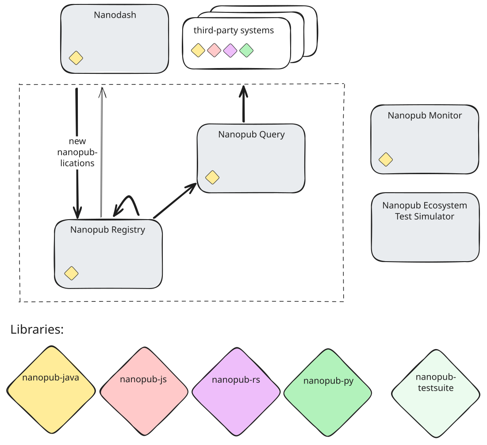

A Decentralized Infrastructure for Trust-Aware Open Knowledge Sharing by Humans and AI Agents [DRAFT]
- Modified
Abstract
Context: one sentence on the broader research area and why it matters. Semantic technologies and models have matured and become very powerful tools to increase the power and accuracy of recent AI approaches. Problem: one sentence on the specific gap, limitation, or open question. However, we currently lack channels where semantically structured knowledge can be reliably published and queried, both by humans as well as AI agents. Objective: one sentence stating what this paper sets out to achieve. Here we show how this gap can be filled by a global ecosystem that aligns with the original Semantic Web vision with respect to openness, decentralization, and formal semantics, but also targets trust and redundancy. Approach: one or two sentences naming the proposed artifact/method and its key idea. Our approach is based on the concept and technology of nanopublications with content-addressed Trusty URIs and a three-layer peer-to-peer network of publishing services, query services, and user applications, respectively. The trust network elements that link user identifiers to public keys and assert trust links are published as nanopublications themselves, and the publishing services build upon them to calculate a global trust network and assign quotas. The querying services build upon that, load the nanopublications into different separate triple stores, sliced by pubkey keys as well as nanopublication types. User applications then don't need to store data locally but can access these services to serve as a universal knowledge sharing UI. Evaluation: one sentence on how the approach was validated (datasets, experiments, deployment). We evaluate the ecosystem on a multi-node test deployment running a synthetic workload of concurrent publishers and queriers under simulated network disruptions. Results: one sentence with the main quantitative or qualitative finding. Initial results are consistent with the design's correctness and scalability goals. Implications: one sentence on broader impact, takeaway, or what this enables next. Our work shows that a such a decentralized network of services based on nanopublications has the capacity and potential to serve as a universal and globally integrated knowledge sharing platform.
Keywords
- Nanopublications
- Knowledge Graphs
- FAIR Data
- Scholarly Communication
- Decentralized Infrastructure
Introduction
motivate the problem, state the research question, and list contributions as a bulleted paragraph at the end of this section.
Approach
describe the components of the ecosystem (servers, registries, clients, templates, services) and how they interact.
Things the second generation nanopublication network adds:
- Only signed nanopublications
- Recognizes nanopublication types, and uses these to organize them
- All nanopublications are listed first by pubkey, and then by type
- Registry and Query instances can restrict their content by pubkeys and/or types
- Trust network aware, starting from setting nanopublication
- Quota system
Architecture
expand this section with a proper data-flow description that ties together the layers and the Registry concepts introduced below; double-check layer names and responsibilities against the current ecosystem deployment.
At a high level, the ecosystem is organised into four cooperating layers. Trusty URIs provide content-derived, immutable identifiers for every nanopublication. A federated set of Nanopub Registries ingests, authenticates, governs and replicates these nanopublications; the subsequent subsections describe their internal structure in detail. On top of the Registries, a set of Nanopub Query services indexes the stored content and exposes it through SPARQL and REST endpoints. Finally, user-facing client applications — foremost among them Nanodash — create, sign, submit, and browse nanopublications by interacting with the Registry and Query APIs. Nanopublications therefore flow upward from clients to Registries at publication time, and downward from Registries through Query into client-facing views at consumption time.

Public keys, signers, and types
double-check terminology, account lifecycle, coverage semantics, and joint storage layout against the Nanopub Registry implementation before submission.
Three orthogonal attributes determine how the Registry stores and governs a nanopublication: the public key used to sign it, the signer that controls that key, and the types the nanopublication declares about itself. We use signer as the primary term — the nanopub data model and the Registry code call this entity an agent — to stress the cryptographic role and to distinguish it from semantic creators or contributors a nanopublication may additionally declare.
Every accepted nanopublication carries a signature made with an RSA public key, which the Registry identifies by its SHA-256 hash and treats as the primary account identifier. Signers are identified by persistent URIs (typically ORCIDs) and are bound to their keys through introduction nanopublications. This binding is many-to-many and auditable: a key whose only claimant is a single signer yields an approved account, whereas two or more signers claiming the same key yields contested accounts that are held back from general availability until the ambiguity is resolved.
Each nanopublication further declares a set of types (IRIs) that place it in a functional or domain class (assertion, introduction, endorsement, template, and so on). A Registry instance has a configurable coverage — a set of types, with introductions, endorsements, and the setting nanopublication always included — that fixes what the instance stores; nanopublications of uncovered types are rejected. Storage is organised first by signer and public key (reflecting who published) and, within each key, by type (reflecting what).
Ingest, replication, and retractions
double-check the ingest pipeline, the list-based replication protocol, the HTTP API surface (endpoint names and semantics), and the retraction/invalidation behaviour against the Nanopub Registry implementation before submission.
Incoming nanopublications enter a Registry through an HTTP POST endpoint. The Registry verifies the signature against the declared public key, checks that the nanopublication's types fall within the instance's coverage, resolves the signer's account, and enforces the per-key publication quota derived from the trust-calculation step; if any of these checks fails — invalid signature, uncovered type, unknown or contested key, or quota exceeded — the submission is rejected without side effects. Accepted nanopublications are immutable and become retrievable from the instance by their Trusty URI.
Registries replicate content from one another along the same (public key, type) axes as their internal organisation. Every ordered per-(public key, type) list is exposed as a paginated HTTP resource; entries carry a running position and per-entry checksum, which peers use to detect divergence and resume replication after interruption. An instance therefore does not mirror the entire network: it selects the public keys and types it covers and pulls only the corresponding lists from its peers, alongside a small number of fixed endpoints for Trusty-URI lookup, coverage declaration, and the trust-state snapshot introduced in the next section.
Retractions are themselves nanopublications that reference, by Trusty URI, the nanopublications they retract. The Registry does not delete the target — every nanopublication remains resolvable by its hash — but it sets an invalidated flag on the corresponding list entry. When the retracted nanopublication is an introduction or endorsement, the invalidation additionally propagates into the next trust-state computation, so that stale keys and edges are removed from the trust graph as part of its normal re-derivation.
Trust calculation
double-check the prose and the pseudo-code below against the Nanopub Registry implementation before submission.
double-check which parameters are actually carried by the setting nanopublication versus being hard-coded or environment-configurable in the Registry.
Each Registry is parameterised by a setting nanopublication that fixes the root of its trust graph and the broader conditions under which the instance operates. The setting declares at least one initial trusted signer from which all other trust ultimately flows, the Registry's type coverage, and the numeric parameters of the trust computation (global and per-signer quota bounds, decay factor, maximum depth, and pruning threshold). Because the setting is itself a nanopublication, it is immutable, signed, and referenceable by its Trusty URI; different Registry instances can therefore declare different settings and, by consequence, different trust roots and policies.
Each Nanopub Registry derives a per-public-key trust score using an algorithm we call Iterative Declaration-Endorsement Bounded Trust (IDEBT): endorsements are propagated through a directed graph rooted in the setting nanopublication, with the propagation bounded both by a maximum recursion depth and by a minimum-ratio cutoff. The computation is deterministic, re-runnable, and exposed to downstream services as a versioned snapshot.
The trust graph is rooted in a single setting nanopublication that anchors a root agent. Introduction nanopublications bind agents to public keys, and endorsement nanopublications add trust edges between introductions; retractions invalidate previously declared edges. Trust is then propagated iteratively from the root through endorsement chains up to a maximum depth, and paths whose ratio falls below a fixed threshold are pruned.
At each hop, 90% of a parent's ratio is distributed uniformly across its endorsed children (and split further across their public keys) while 10% is retained on the parent path, yielding a geometric discount with depth. For a given public key, all trust paths reaching it are summed into a single aggregated ratio; the number of paths whose intermediate endorsers are pairwise disjoint is tracked separately as a diagnostic path count, but does not enter the score itself. The aggregated ratio in [0,1] is then mapped to an integer publication quota, clamped between a minimum and maximum value so that even weakly trusted agents retain a baseline and highly trusted ones do not dominate.
A public key claimed by exactly one agent is marked approved; a public key claimed by two or more distinct agents is marked contested and held back from general availability until the ambiguity is resolved. Finally, the complete set of trust paths is hashed (SHA-256) to a trust-state hash that is published in an HTTP header and served as an immutable snapshot endpoint, so that Nanopub Query instances and other consumers can atomically mirror consistent trust states.
The core of this computation can be summarised as the simplified procedure below. Here S is the setting nanopublication and N is the set of trust-edge tuples considered by the registry; N is not a fixed input but is built up incrementally as the local declaration and endorsement caches grow. At each depth, when a key k enters the trust frontier, the new edges contributed to N are those whose endorser pubkey is k, derived from the corresponding endorsement and declaration nanopubs fetched into the local caches at the same step.
A trust path p is the central data structure: a record with a chain chain(p) of (agent, pubkey) hops ending at end(p), a current contribution p.ratio in [0,1], the depth p.depth at which it was first inserted, and a flag p.primary that is set once the path has been expanded and the residual contribution retained on it. A single sentinel $ denotes the root (agent, pubkey) — the setting S acting as the root endorser. The registry additionally maintains two local collections of nanopublications — declarations (also known as introductions in the established nanopub vocabulary) and endorsements — which it grows by fetching from peer registries as new keys enter the trust frontier. Because peers expose nanopublications already partitioned by (pubkey, type), these fetches are themselves type-scoped: for a given key k, the declarations and the endorsements live on distinct list resources and are pulled with two separate requests rather than retrieved together and filtered locally. The trust-edge set N is derived from these collections, with each edge ((a, k), (a', k')) ∈ N meaning that an endorsement in endorsements signed by (a, k) references a declaration in declarations that declares the binding (a', k').
IDEBT first seeds paths with a single root path of ratio 1.0 at depth 0, anchored at the sentinel $; populates the local declarations cache by fetching the agent-intro index nanopub referenced from S and then retrieving each declaration it lists by Trusty URI; starts endorsements empty; and seeds the edge set N with edges from $ to each binding declared by those declarations. The setting S itself is held in local storage and contributes no peer traffic. (The pseudo-code below performs the index fetch and the per-declaration retrievals together at the top of IDEBT; the actual Registry implementation interleaves the per-declaration retrievals with the first iteration of the depth loop, treating the index entries as placeholder endorsement links until they are resolved, with no effect on the resulting trust state.)
IDEBT then iterates the frontier-expansion loop up to a configured maximum depth. At each iteration, for every key that has just entered the trust frontier, peer registries are queried twice — once for the (k, declaration-type) list and once for the (k, endorse-type) list; the responses are appended to the local declarations and endorsements collections respectively, the edge set N is extended accordingly, and only then are the path expansions performed. IDEBT does not return a value; its output is the populated global paths variable, from which the post-IDEBT per-key scoring and trust-state hash steps below are derived without further peer access.
Task-enum annotations below are scaffolding for cross-checking against the Nanopub Registry enum; remove before submission.
Globals:
peers — configured peer registries (read-only)
paths — set of trust paths (filled by IDEBT)
▶ LOAD_SETTING
▶ INIT_COLLECTIONS
IDEBT(S):
Input: setting nanopub S
Output: paths is filled with the trust path set
paths ← { (chain = [$], ratio = 1.0,
depth = 0, ¬primary) }
declarations ← { peers.fetch(u) :
u ∈ peers.fetch(S.agentIntroCollection) }
endorsements ← ∅
N ← { ($, (a, k)) : (a, k) declared
by some D ∈ declarations }
for d = 1 to MAX_DEPTH:
expand ← SelectFrontier(d - 1)
if expand = ∅: break
for p in expand:
k ← pubkey(end(p))
declarations ← declarations ∪ peers.fetch(k, DECLARE_TYPE)
endorsements ← endorsements ∪ peers.fetch(k, ENDORSE_TYPE)
N ← N ∪ { ((a, k), (a', k')) :
∃ e ∈ endorsements signed by (a, k),
∃ D ∈ declarations referenced by e,
D declares (a', k') }
Expand(expand, N, d)Frontier selection. At each depth, the registry collects the endpoints of all non-primary paths inserted at the previous depth and, for each such endpoint, retains only the highest-ratio path leading to it. Paths whose ratio has fallen below MIN_RATIO are dropped, which acts as the pruning gate that keeps the frontier finite. The selection step is purely local: it consults paths only and touches neither peer registries nor declarations / endorsements. The peer fetch and the corresponding update of declarations, endorsements, and N happen back in the driver loop above, between SelectFrontier and Expand, with two type-scoped list resources retrieved per surviving frontier endpoint — one for the declaration-type partition (k, declaration-type) and one for the endorsement-type partition (k, endorse-type).
▶ LOAD_CORE
SelectFrontier(d):
expand ← ∅
for x in { end(p) : p ∈ paths,
p.depth = d, ¬p.primary }:
p* ← argmax { p.ratio : p ∈ paths, end(p) = x,
p.depth = d, ¬p.primary }
if p*.ratio ≥ MIN_RATIO:
expand ← expand ∪ { p* }
return expandTie-breaking. The argmax in SelectFrontier is in general not unique: two non-primary paths to the same endpoint x at depth d can carry exactly the same ratio — for example, equally branched siblings reaching x via disjoint chains. To keep the algorithm fully deterministic, the Registry implementation breaks such ties by an ascending SHA-256 hash of the path identifier salted with the setting, sorthash = SHA-256(S || pathId), where pathId serialises chain(p); the effective selection key is therefore (p.ratio, −sorthash) in lexicographic order. The same secondary key is used wherever paths are sorted by ratio, including the per-key aggregation in the per-key scoring step below, so that two Registries running IDEBT against the same S produce identical path sets — and therefore identical trust-state hashes — even when the underlying ratios collide.
Path expansion. A frontier path is expanded by distributing a fraction SPLIT of its current ratio across the agents endorsed from its endpoint, splitting first by agent and then, within each agent, equally across the agent's endorsed public keys; the remaining (1 - SPLIT) stays on the parent path, which is then marked primary so it is not re-expanded. Each new (a, k) hop is appended as a fresh non-primary path at the current depth. Endorsements pointing to accounts that already appear as the endpoint of some path in paths are skipped at this step (mirroring the registry's accounts_loading dedup), so every account ends up as the endpoint of at most one path — and therefore as the endpoint of at most one primary path.
▶ LOAD_DECLARATIONS
▶ EXPAND_TRUST_PATHS
Expand(expand, N, d):
for p in expand:
endorsed ← { (a, k) : (end(p), (a, k)) ∈ N,
¬∃ p' ∈ paths : end(p') = (a, k) }
n_agents ← |{ a : (a, _) ∈ endorsed }|
for (a, k) in endorsed:
n_keys ← |{ k' : (a, k') ∈ endorsed }|
r ← p.ratio × SPLIT / n_agents / n_keys
paths ← paths ∪ {
(chain(p) · (a, k), r, d, ¬primary) }
p.ratio ← p.ratio × (1 - SPLIT)
p.primary ← truePer-key scoring (post-IDEBT). Once IDEBT has terminated and paths is populated, a separate post-processing step aggregates per-key scores. All trust paths ending at a given public key k are summed into a single ratio in [0,1]; the number of pairwise-disjoint paths is recorded separately as a diagnostic and does not feed into the ratio or quota. The aggregated ratio is mapped to an integer publication quota, clamped between MIN_QUOTA and MAX_QUOTA. A key claimed by exactly one agent is marked approved; one claimed by two or more is marked contested.
▶ CALCULATE_TRUST_SCORES
▶ ASSIGN_PUBKEYS
ScoreKeys():
for each pubkey k:
P_k ← { p ∈ paths : pubkey(end(p)) = k }
ratio(k) ← Σ { p.ratio : p ∈ P_k }
pathCount(k) ← |{ subset of P_k with pairwise disjoint
intermediate hops }|
quota(k) ← clamp(GLOBAL_QUOTA × ratio(k),
MIN_QUOTA, MAX_QUOTA)
A_k ← { a : ∃ p ∈ P_k, end(p) = (a, k) }
status(k) ← approved if |A_k| = 1
contested otherwise
return { (k, ratio(k), pathCount(k), quota(k), status(k)) }Trust-state hash (post-IDEBT). Finally, the full path set is canonicalised and hashed (SHA-256) into the trust-state hash that downstream services use to mirror a consistent view; because IDEBT is deterministic in S, two registries with the same setting produce the same hash.
▶ FINALIZE_TRUST_STATE
FinalizeState():
return SHA-256(canonical_serialisation(paths))Nanopub Query
double-check the multi-repository layout, admin-graph vocabulary, trust-state and load-counter mechanics, endpoint paths, and the summary of differences from the 2021 service layer against the Nanopub Query implementation before submission.
Mention Query-Nanopubs
Where a Registry authenticates, governs, and stores nanopublications, a Nanopub Query service indexes them and exposes them for reading. A Query instance pairs with one Registry instance and is, functionally, a persistent read-only index over its content: clients interact with the Registry directly only for primitive operations such as Trusty-URI lookup and signed submission, and go through Query for everything higher-level — SPARQL, templated queries, and authority information. This layering replaces the transient LDF-plus-grlc service layer described in the 2021 service-layer work [7] by fully materialised RDF4J indexes, yielding lower-latency responses and per-partition isolation without requiring a separate instance per view.
Rather than a single monolithic triple store, a Query instance maintains a small family of repositories over the same nanopublication population. Alongside global repositories — a full repository, a sliding time window (e.g.\ the last thirty days), a metadata repository, and an administrative repository — Query auto-provisions a per-signer repository for every public key it has seen (pubkey_<hash>) and a per-type repository for every nanopublication type (type_<hash>). The same nanopublications are materialised into multiple repositories according to their signer and types, so that an application interested in a specific signer, a specific type, or a narrow time window can issue queries against a correspondingly narrow index without either scanning the full repository or standing up its own service.
Beyond the raw nanopublication triples, Query maintains admin graphs (npa:graph and npa:networkGraph) that record per-nanopublication signatures, signer URIs, declared types, retraction and supersession links, and load-time metadata (monotonic load counter, per-batch checksum, ingest timestamp). These admin graphs are what makes high-level questions — “the latest non-retracted version of X”, “all nanopublications signed by agent A under type T”, “everything published since load counter N” — expressible as single SPARQL queries over the index rather than as client-side traversals of individual nanopublications.
Query tracks the Registry's trust state through the Nanopub-Registry-Trust-State-Hash header introduced in the previous subsection and materialises each mirrored snapshot into a dedicated trust repository keyed by that hash. Authority-sensitive queries — for example, restricting results to nanopublications whose signing key is currently approved for a given signer — are then expressible as plain SPARQL joins against the trust repository, and switch atomically when the Registry publishes a new trust state. Clients never recompute trust themselves.
Loading from Registry to Query is incremental and restartable. Query pulls nanopublications as a Jelly-encoded RDF stream from the Registry's per-(public key, type) lists and commits each batch together with the Registry-provided Load-Counter, so that interrupted loads resume from the last committed counter rather than restarting. Under sustained load, a circuit breaker throttles the loader if the backing triple store saturates, which keeps query latency bounded at the cost of a momentarily older view.
The query surface on top of this model is deliberately narrow. Each repository is exposed as a standard SPARQL endpoint with a YASGUI-based browser interface, and a set of named, nanopublication-defined templates — the successors to the grlc-style queries of the first-generation service layer, now specified as OpenAPI documents — provide parameterised, machine-consumable queries for common lookups. The combination of materialised partitions, admin metadata, and trust-state mirroring is what makes this second generation of Query services a qualitative step beyond a generic SPARQL endpoint over nanopublications.
Nanodash
double-check the description of Nanodash (Wicket architecture, ORCID + client-side key handling, template mechanism, space model) against the current nanodash codebase before submission.
Nanodash is the principal end-user client of the ecosystem: a Java/Wicket web application, deployed as several public instances, through which users browse, author, sign, and publish nanopublications. Users authenticate via ORCID and generate their RSA keypair locally, so private keys never leave the client; browsing and discovery go through a Query service, while signed submissions are posted to a Registry, whose trust model determines which keys the interface treats as approved.
The defining feature of Nanodash is its template-driven authoring model: templates are themselves nanopublications, published through the same Registry, that describe form-like structures with typed placeholders, regular-expression and datatype constraints, and autocomplete endpoints backed by Query APIs. Filling in a template produces a new structured nanopublication that Nanodash assembles, signs locally, and publishes. Templates can be pinned to collaborative spaces whose membership and role assignments are themselves nanopublications, so the authoring interface, the trust and governance model, and the published content are all expressed in the same nanopublication substrate.
Evaluation
describe experiments, datasets, metrics, and threats to validity.
Discussion
interpret results, limitations, and implications for the Semantic Web community.
Conclusion and Future Work
summarize contributions and outline planned extensions.
Acknowledgements.
redact for dual-anonymous submission. Add funders and collaborators in the camera-ready version.
Supplemental Material Statement
list code, datasets, and resources with anonymous links (e.g., Zenodo, Anonymous GitHub) for review. Replace with canonical DOIs in the camera-ready.
Use of Generative AI
disclose any use of generative AI tools in accordance with the ISWC 2026 policy, or state that none was used.
References
verify author lists, page ranges, DOIs, and volume numbers against the canonical records. LNCS expects full author names (initials + surname) and precise venue identifiers.
- Banda, J.M., Kuhn, T., Shah, N.H., Dumontier, M.: Provenance-centered dataset of drug-drug interactions. In: Proceedings of the 14th International Semantic Web Conference (ISWC 2015). Springer (2015). https://doi.org/10.1007/978-3-319-25010-6_18
- Groth, P., Gibson, A., Velterop, J.: The anatomy of a nanopublication. Information Services & Use 30(1–2), 51–56 (2010). https://doi.org/10.3233/ISU-2010-0613
- Kuhn, T., Barbano, P.E., Nagy, M.L., Krauthammer, M.: Broadening the scope of nanopublications. In: Proceedings of the 10th Extended Semantic Web Conference (ESWC 2013). Springer (2013). https://doi.org/10.1007/978-3-642-38288-8_33
- Kuhn, T., Chichester, C., Krauthammer, M., Queralt-Rosinach, N., Verborgh, R., Giannakopoulos, G., Ngonga Ngomo, A.C., Viglianti, R., Dumontier, M.: Decentralized provenance-aware publishing with nanopublications. PeerJ Computer Science 2, e78 (2016). https://doi.org/10.7717/peerj-cs.78
- Kuhn, T., et al.: Nanopublications: a growing resource of provenance-centric scientific linked data. In: Proceedings of IEEE eScience 2018. IEEE (2018). https://doi.org/10.1109/eScience.2018.00024
- Kuhn, T., Chichester, C., Krauthammer, M., Dumontier, M.: Publishing without publishers: a decentralized approach to dissemination, retrieval, and archiving of data. In: Proceedings of the 14th International Semantic Web Conference (ISWC 2015). Springer (2015). https://doi.org/10.1007/978-3-319-25007-6_38
- Kuhn, T., et al.: Semantic micro-contributions with decentralized nanopublication services. PeerJ Computer Science 7, e387 (2021). https://doi.org/10.7717/peerj-cs.387
- Kuhn, T., Dumontier, M.: Trusty URIs: verifiable, immutable, and permanent digital artifacts for linked data. In: Proceedings of the 11th Extended Semantic Web Conference (ESWC 2014). Springer (2014). https://doi.org/10.1007/978-3-319-07443-6_27
- Mons, B., Velterop, J.: Nano-publication in the e-science era. In: Proceedings of the Workshop on Semantic Web Applications in Scientific Discourse (SWASD 2009). CEUR Workshop Proceedings, vol. 523 (2009). https://ceur-ws.org/Vol-523/Mons.pdf
- Queralt-Rosinach, N., Kuhn, T., Chichester, C., Dumontier, M., Sanz, F., Furlong, L.I.: Publishing DisGeNET as nanopublications. Semantic Web Journal 7(5), 519–528 (2016). https://doi.org/10.3233/SW-150189
- Kuhn, T.: Knowledge Space. Version 1.0 (2026). https://w3id.org/knowledge-space/